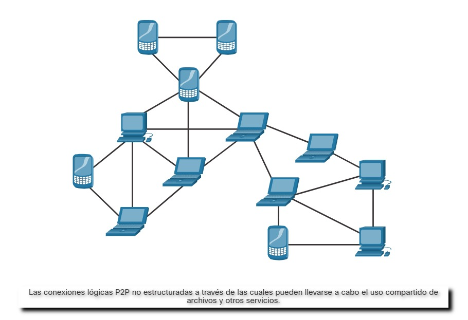

24.2.1 Listas de control de acceso (ACL)
Muchos protocolos y tecnologías pueden afectar el monitoreo de la seguridad. Las listas de control de acceso (ACL, Access Control List) se encuentran entre estas tecnologías. Las listas ACL pueden dar una falsa sensación de seguridad si se confía demasiado en ellas. Las ACL y el filtrado de paquetes en general son tecnologías que forman parte de un conjunto de protecciones de seguridad de la red en constante evolución.
En la figura, se ejemplifica el uso de ACL para autorizar solamente determinados tipos de tráfico de protocolo de mensajería de control de Internet (ICMP). El servidor en 192.168.1.10 forma parte de la red interna y tiene permitido enviar solicitudes de ping al host externo en 209.165.201.3. El tráfico ICMP de retorno del host externo está autorizado si se trata de una respuesta de ICMP, un mensaje source quench (le indica al origen que reduzca el ritmo del tráfico) o cualquier mensaje de ICMP inalcanzable. Todos los demás tipos de tráfico de ICMP se niegan. Por ejemplo, el host externo no puede iniciar una solicitud de ping al host interno. La ACL de salida autoriza los mensajes de ICMP que informan diversos tipos de problemas. Esto permite la tunelización de ICMP y la exfiltración de datos.
Los atacantes pueden determinar qué direcciones IP, protocolos y puertos están autorizados por las ACL. Esto se puede hacer mediante escaneo de puertos, pruebas de penetración o mediante otras formas de reconocimiento. Los atacantes pueden crear paquetes que utilicen direcciones IP de orígenes falsificados. Las aplicaciones pueden entablar conexiones en puertos arbitrarios. Otras características del tráfico de protocolo también pueden manipularse, como el marcador establecido en segmentos de TCP. Las reglas no pueden preverse y configurarse para todas las técnicas de manipulación de paquetes que surgen.
Para detectar la manipulación de paquetes y reaccionar ante ella, deben tomarse medidas más sofisticadas con base en el comportamiento y el contexto. Los firewalls de última generación de Cisco, la protección avanzada contra malware (AMP) y los dispositivos de correo electrónico y contenido web son capaces de abordar las deficiencias de las medidas de seguridad con base en las reglas.
Mitigar el abuso de ICMP

24.2.2 NAT y PAT
La traducción de direcciones de red (NAT) y la traducción de direcciones de puerto (PAT) pueden complicar el monitoreo de la seguridad. Varias direcciones IP se asignan a una o más direcciones públicas que son visibles en Internet, ocultando las direcciones IP individuales que están dentro de la red (direcciones internas).
En la figura, se ejemplifica la relación entre las direcciones internas y externas que se utilizan como direcciones de origen (SA, Source Address) y direcciones de destino (DA, Destination Address). Estas direcciones internas y externas están en una red que usa NAT para comunicarse con un destino en Internet. Si PAT está en efecto, y todas las direcciones IP que salen de la red utilizan la dirección global interna 209.165.200.226 para el tráfico a Internet, podría ser difícil registrar el dispositivo interno específico que solicita y recibe el tráfico cuando ingresa a la red.
Este problema puede ser particularmente importante con los datos de NetFlow. Los flujos de NetFlow son unidireccionales y se definen por las direcciones y puertos que comparten. Básicamente, NAT romperá un flujo que pase por un gateway de NAT y hará que la información del flujo no esté disponible desde ese momento en adelante. Cisco ofrece productos de seguridad que “cosen” los flujos para unirlos, incluso si NAT reemplazó las direcciones IP.
NetFlow se analiza en mayor detalle más adelante en este capítulo.
Traducción de direcciones de red

24.2.3 Encriptación, encapsulamiento y tunelización
Como se mencionó con HTTPS, la encriptación puede presentar desafíos para el monitoreo de la seguridad tornando ilegibles los detalles de un paquete. La encriptación es parte de las tecnologías de VPN. En las VPN, un protocolo común (como IP) se utiliza para transportar tráfico encriptado. Fundamentalmente, el tráfico encriptado establece una conexión de punto a punto virtual entre redes en instalaciones públicas. La encriptación hace que el tráfico sea ilegible para todos los dispositivos, salvo los terminales de la VPN.
Una tecnología similar se puede utilizar para crear una conexión virtual de punto a punto entre un host interno y los dispositivos del agente de amenaza. El malware puede establecer un túnel cifrado que transita por un protocolo común y de confianza, y utilizarlo para exfiltrar datos desde la red. Un método similar de exfiltración de datos se analizó anteriormente para DNS.
24.2.4 Conexión de red entre pares y Tor
En las redes peer-to-peer (P2P), que se muestran en la figura, los hosts pueden operar tanto en roles de cliente como de servidor. Existen tres tipos de aplicaciones P2P: uso compartido de archivos, uso compartido de procesadores y mensajería instantánea. En las redes P2P de uso compartido de archivos, los archivos de una máquina participante se comparten con los miembros de la red P2P. Ejemplos de esto son los programas alguna vez populares Napster y Gnutella. El bitcóin tiene un funcionamiento de red P2P que consiste en compartir una base de datos distribuida (o libro) que registra transacciones y saldos de bitcóin. BitTorrent es una red P2P para compartir archivos.
Cada vez que se les otorga acceso a los recursos de la red a usuarios desconocidos, la seguridad está en riesgo. No se deben permitir aplicaciones P2P de intercambio de archivos en redes corporativas. La actividad de redes P2P puede sortear las protecciones de firewall y es un medio habitual para propagar malware. La red P2P es intrínsecamente dinámica. Puede funcionar conectándose a numerosas direcciones IP de destino y también puede utilizar la numeración dinámica de puertos. Los archivos compartidos suelen estar infectados con malware y los agentes de amenaza pueden colocar su malware en clientes P2P para distribuirlo a otros usuarios.
Las redes P2P de uso compartido de procesadores donan ciclos del procesador para tareas de informática distribuida. La investigación científica y sobre el cáncer, y la búsqueda de extraterrestres, utilizan ciclos de procesador donados para distribuir tareas informáticas.
La mensajería instantánea (IM) también se considera una aplicación P2P. La IM tiene valor legítimo dentro de las organizaciones que tienen equipos de proyectos distribuidos geográficamente. En este caso, hay disponibles aplicaciones de mensajería instantánea especializadas, como la plataforma Webex Teams, que son más seguras que la mensajería instantánea que usa servidores públicos.
P2P

Tor es una plataforma de software y una red de hosts P2P que funcionan como enrutadores de Internet en la red Tor. La red Tor permite a los usuarios navegar por Internet de forma anónima. Los usuarios tienen acceso a la red Tor mediante un navegador especial. Cuando se inicia una sesión de navegación, el navegador construye una ruta de extremo a extremo en capas a través de la red del servidor Tor que está encriptada, como se muestra en la figura. Cada capa encriptada se “pela” como las capas de una cebolla (por eso el nombre “enrutamiento tipo cebolla”) a medida que el tráfico atraviesa un retransmisor de Tor. Las capas contienen información encriptada de siguiente salto que solamente puede leer el router que necesita leer la información. De esta manera, ningún dispositivo conoce toda la ruta al destino, y la información de enrutamiento solo puede ser leída por el dispositivo que la necesita. Finalmente, al final de la ruta Tor, el tráfico llega a su destino de Internet. Cuando el tráfico regresa al origen, se crea una ruta con capas encriptadas nuevamente.
Tor presenta una serie de desafíos para los analistas de ciberseguridad. Primero, Tor es ampliamente utilizado por organizaciones delictivas en la “red oscura”. Además, Tor se ha utilizado como un canal de comunicaciones para CnC de malware. Debido a que la dirección IP de destino del tráfico de Tor está oculta por la encriptación y solamente se conoce el nodo del siguiente salto de Tor, el tráfico de este navegador evita las listas negras que se han configurado en los dispositivos de seguridad.
24.2.5 Balance de carga
El equilibrio de carga implica la distribución del tráfico entre dispositivos o rutas de redes para no sobrecargar los recursos de redes con demasiado tráfico. Si existen recursos redundantes, un algoritmo o dispositivo de equilibrio de carga se encargará de distribuir el tráfico entre esos recursos, como se ve en la figura.
Una forma de hacerlo en Internet es a través de varias técnicas que utilizan DNS para enviar tráfico a recursos que tienen el mismo nombre de dominio pero varias direcciones IP. En algunos casos, la distribución puede realizarse a servidores distribuidos geográficamente. Esto puede resultar en que una sola transacción de Internet esté representada por múltiples direcciones IP en los paquetes entrantes. Esto puede hacer que aparezcan características sospechosas en las capturas de paquetes. Además, algunos dispositivos de administración del equilibrio de carga (LBM, Load Balancing Manager) utilizan sondas para evaluar el desempeño de diferentes rutas y la condición de distintos dispositivos. Por ejemplo, un dispositivo de LBM puede enviar sondas a los diferentes servidores en los que equilibra la carga para detectar si los servidores están funcionando. Esto se hace para evitar el envío de tráfico a un recurso que no esté disponible. Estas sondas pueden parecer tráfico sospechoso si el analista de ciberseguridad no está al tanto de que este tráfico es parte del funcionamiento del dispositivo de LBM.
Equilibrio de carga con delegación DNS